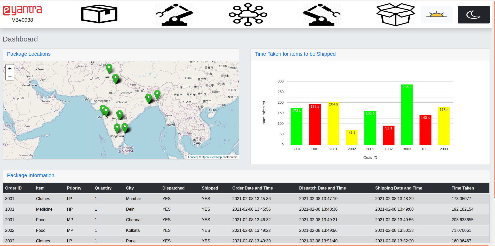
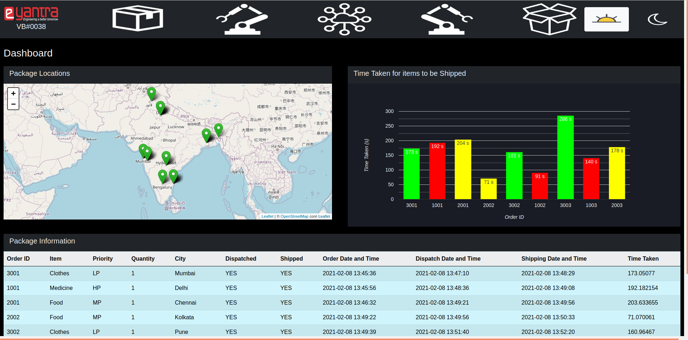

Detailed Description of Implementation
Environment
We have a gazebo simulation environment of an Amazon Warehouse. In this warehouse we have the following objects:
- Two UR5 robotic arms named UR5#1 and UR5#2
- Two Logical Cameras named Logical Camera#1 and Logical Camera#2
- Packages of high, low and medium priority
- Shelf which consists of the packages
- A 2D camera to detect the colours of the packages
- Conveyor belt to transport packages from one part of the warehouse to another
- Sorting bins for high, medium and low priority packages
Working
Camera_1:
The camera_1 is used to identify the colours of the boxes in the individual shelves for the arm to go and pick up. The camera gives the feed of the entire shelf with all the packages in frame. Since it is not possible to identify the colours of the packages in one entire frame, we have segmented each of the boxes into its own separate image, which enables us to detect the colour by identifying the most dominant colour in the segment of the picture. This is then stored into the dictionary which then used in multiple parts of the upcoming program. The dictionary is published onto the Spreadsheet using the ROS-IOT Bridge to the “inventory” sheet. This is also used to map the colours to the trajectory files for the movement of the UR5#1 arm.
Receiving Incoming Orders:
After 1 minute of Simulation Time in Gazebo, a total of 9 orders are published onto the topic /eyrs/vb/RrSsVvPp/orders MQTT Topic at different intervals for each order. The yaml parameter file config_online_order.yaml is used to publish onto the MQTT Topic. We subscribe to this topic through our python code and every incoming order (in the form of a dictionary) is stored as an element of a list. This list is then published to a ROS Topic so that all our running nodes have access to this list.
Save and Play:
MoveIt! saves the trajectories planned by the Planner (TrakIK Kinematics Planner) selected during the moveit_setup_assistant into a YAML File and then use it whenever you want. This is advantageous to us because you can save time by saving time off the planner by replaying the data stored in the YAML File.
By giving the Planner sufficient amount of time to plan and sufficient number of attempts in the case of any controller failure or inability to plan a trajectory, we have taken 10 trials for each package on the shelf to and from the dropPose above the conveyor that amounts to around 240 files out of which some are null because it failed to save the trajectory. After an analysis of each of the files to find the most optimal trajectory for that package. All of the optimal files are placed inside the "pkg"/config/saved_trajectories/ which are then accessed by the play function to replay the trajectory.
UR5#1 Arm:
This robot arm is used to pick up packages from the shelf and put them on the conveyor belt. Through the knowledge of the sorted list of incoming orders, it picks up the package with the highest priority.
We have used save and play for the locations of all the packages on the shelf.
Conveyor:
As mentioned earlier, we have two UR5 arms, one to pick up packages from the shelf and drop them onto the conveyor belt(UR5#1) and one to pick up packages from the conveyor belt and sort them into the correct bins (UR5#2).
The conveyor belt is initially switched on at the maximum speed, and packages are dropped onto the moving conveyor belt by UR5#1. The conveyor belt then takes these packages to UR5#2. When the packages near UR5#2, the convyor belt is stopped to ensure the smooth pick up of the packages from the conveyor belt by the UR5#2 arm. After a package has been picked up, the conveyor belt is restarted at the maximum speed.
Logical Camera:
This camera is used to determine the package number, ex. ‘packagen00’ which is then stored into the dictionary and the used to update the Google SpreadSheet for dispatched and shipped updates.
UR5#2 Arm:
The UR5#2 arm is used to pick the package from the conveyor and place the package in its identical coloured bin.
Updating Spreadsheets:
We update a total of five spreadsheets in real time to make data management and visualization easy. These five spreadhseets are:
- Inventory
- Incoming Orders
- Orders Dispatched
- Orders Shipped
- Dashboard
Inventory
This sheet contains details of all 12 packags on the shelf, as identified by Camera#1.
Incoming Orders
This sheet contains details about the incoming orders, which is a list of dictionaries as explained above.
Orders Dispatched
This sheet is updated with details about each order once it has been dispatched, i.e. when UR5#1 drops the package oto the conveyor belt.
Orders Shipped
This sheet is updated with details about each order once it has been shipped, i.e. when UR5#2 successfully sorts the package into the correct bin.
Dashboard
This sheet contains a compilation of data from the above spreadhsheets and keeps track of the status of each order. The dashboard webpage also sources its data from this spreadsheet.
Once an order has been dispatched or shipped (i.e. a package has been dropped onto the conveyor belt or sorted into a bin), a goal is sent to an Action Server containing a dictionary filled with details about the package that has been dispatched or shipped. The node which communicates between ROS and IOT then subscribes to this Action message, which prompts it to update the correct spreadhsheet with the relevant information.
Google Apps Scripting:
When a HTTP GET request is sent from the nodes (python file), the columns and rows get updated automatically through the google app script code of the spreadsheets.
The values for all columns in the spreadsheet are recieved as parameters in the HTTP request by the node.
Email:
When an order gets shipped or dispatched a mail is sent to the customer with details about the shipped or dispatched package.
Dashboard:
Dashboard shows the status of the orders in real-time The dashboard consists of 3 parts:
- Geolocation(map) showing information about Inventory order
- Table showing the live status of the orders
- Graph showing the status of time taken for each order
When a package is shipped the table gets updated with the following information:
- Order ID
- Item
- Priority
- Quantity
- City
- Dispatched
- Shipped
- Order Date and Time
- Dispatch Date and Time
- Shipping Date and Time
- Time Taken
A red marker is put on the map when an order is placed at a certain location. When the order gets dispatched the marker changes to yellow colour and after the order is shipped the marker colour changes to green.
The dashboard is updated in real time i.e. every time an order is shipped or dispatched the table, map and graph are updated.
Dashboard Light Mode

Dashboard Dark Mode
